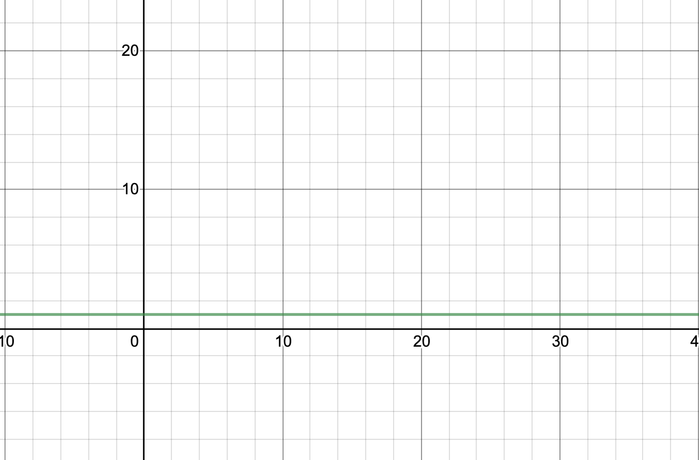
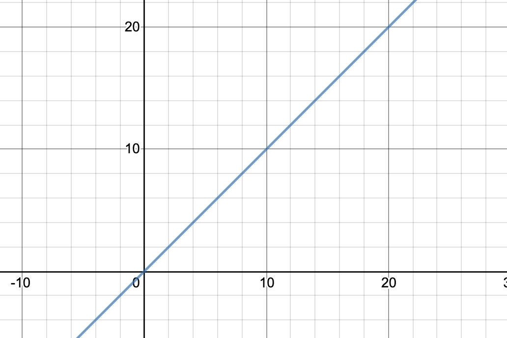
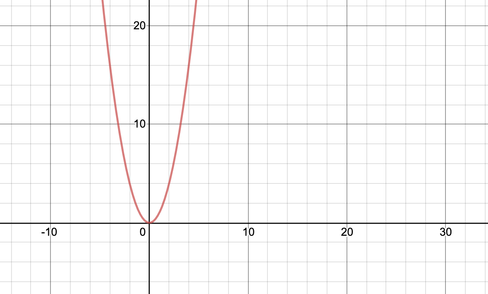
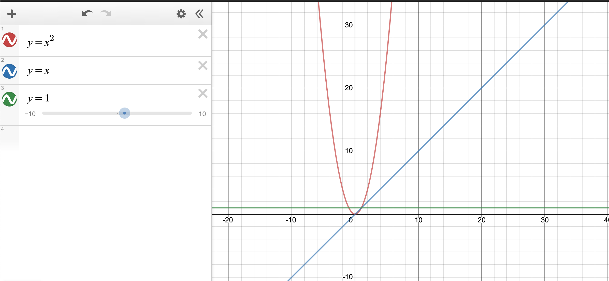
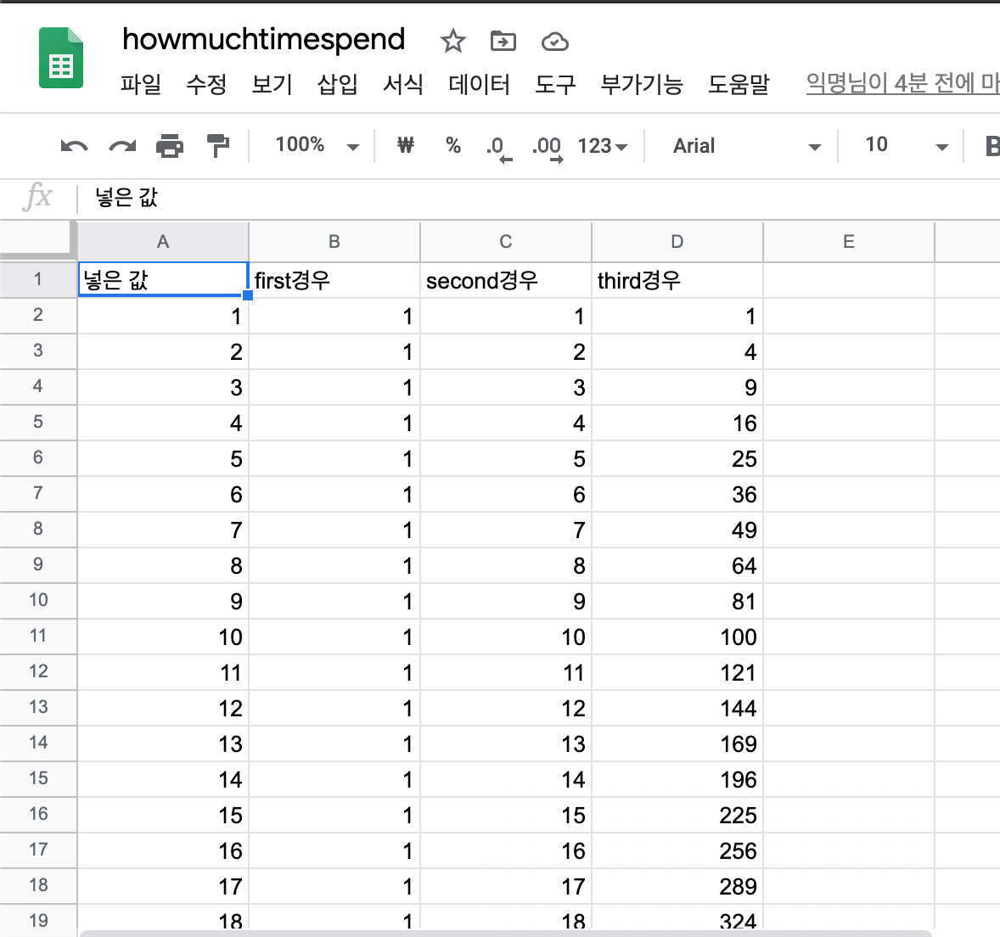

-
1.개요:
- 1-1.알고리즘의 정의
- 1-2.알고리즘의 속도를 측정하는 방법
-
2.실험
- 2-1.예제코드
- 2-2.각 코드별 알고리즘 복잡도 및 예상 그래프
- 2-3.각 코드별 소요시간
- 2-3.결론
- 3.느낀 점
1.개요
1-1.알고리즘의 정의
컴퓨터의 거대하고 방대한 데이터의 문제를 해결하기 위해, 다양한 방법을 사용한다. 그것을 우리는 알고리즘이라고 그 과정 속에서 데이터가 변환되는 과정을 자료구조라고 일컫는다.
1-2.알고리즘의 속도를 측정하는 방법
알고리즘을 측정하는 방법엔 크게 두가지가 있다.
- 실행시간 측정법:직접 소스코드를 구현하여 걸리는 시간을 측정하는 방법
- 알고리즘 복잡도 분석:직접 구현하지 않고 수학적 계산을 통해 유추하는 방법(시간복잡도와 공간복잡도 등이 있음)
2.실험
2-1.예제코드
예제코드 보기
실험대상:n을 n번 더하는 계산. (단, for루프 제어연산과 대입연산은 고려하지 않고, 컴퓨터 성능으로 인해 어지간한 계산은 차이가 잘 나지 않으니, 한번 연산 당 변수의 값을 올림(변수 second))
-
1.n*n
void first case(int randomNumber) {int second=0;int sum=randomNumber*randomNumber;second++;std::cout<<(sum);std::cout<<(second);} -
2.n을 반복문을 통해 n번 더함
void secondcase(int randomNumber) {int sum=0;int second=0;for(int i=0;i<randomnumber;i++){sum+=randomNumber;second++;}std::cout<<(sum);std::cout<<(second);} -
3.n을 이중반복문을 통해 1씩 증가시킴
void thirdCase(int randomNumber) {int sum=randomNumber*randomNumber;int second=0;for(int i=0;i<randomnumber;i++){for(int j=0;j<randomnumber;j++){sum++;second++;}}std::cout<<(sum);std::cout<<(second);}
2.2각 코드별 알고리즘 복잡도 및 예상 그래프
그래프 보기
-
첫번째 경우
값의 상관 없이 한번만 연산된다. O(1)
 -
두번째 경우
값의 크기만큼 반복문이 돌며 연산된다. O(n)
 -
세번째 경우
값의 제곱 크기만큼 반복문이 돌며 연산된다. O(n^2)
 -
전체 보기

2.3각 코드별 소요시간
-
파이썬으로 엑셀 입력 프로그램을 통해 값 액셀에 저장
파이썬 코드 보기
CSV 파일 다운로드 